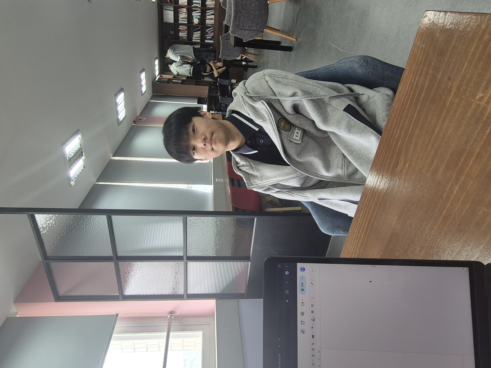
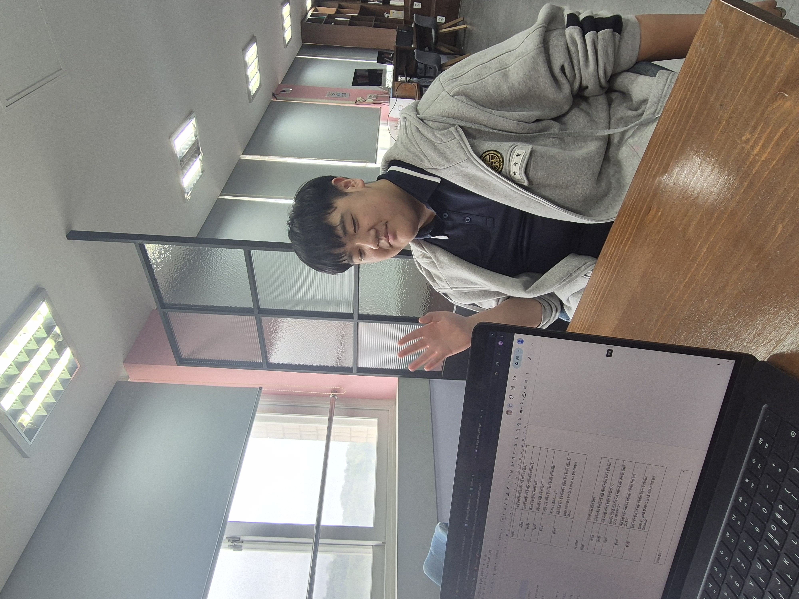

1. 조사 동기와 목적
최근 인공지능(AI)의 활용이 급증하면서 학교 현장에서도 AI가 학습 도구로 적극 활용되고 있습니다. 단순 정보 검색을 넘어 글쓰기, 아이디어 발상, 문제 해결 등 다양한 교육 활동에 AI가 사용됨에 따라, 미림마이스터고 1학년 4반 학생들은 실제로 AI를 어떻게 사용하는지, 특히 프롬프트 작성 방식과 그 효과에 대해 깊이 탐구하고자 했습니다.
본 조사는 프롬프트의 구체성과 명확성이 AI 응답의 질에 미치는 영향을 분석하여, 향후 AI 활용 수업의 방향을 제시하고 학생들이 더 효과적으로 AI를 활용하도록 돕는 것을 목표로 합니다. 더 나아가 생성형 AI 시대에 요구되는 디지털 리터러시 능력 향상을 위한 기초 자료로 활용될 것입니다.
디지털 리터러시란?
단순히 디지털 도구를 잘 다루는 것을 넘어, 비판적으로 이해하고 정보를 효과적으로 활용하며, 문제 해결이나 창의적 사고를 적용할 수 있는 능력입니다. AI에게 원하는 정보를 얻기 위해 질문을 구조화하거나 반복 조정하는 과정에서 디지털 리터러시가 발휘됩니다.
2. 조사 계획
조사 기간
2025년 5월 1일 ~ 5월 17일
AI 활용 수업 직후 신속 조사
조사 대상
총 18명 (남학생, 여학생)
AI 활용 수업 경험 동일 학급 학생
조사 방법
설문조사 + 개별 인터뷰
AI 사용 경험 및 전략 심층 파악
3. 설문으로 알아본 AI 프롬프트 활용법
"AI에게 질문할 때, 프롬프트의 구체성이 얼마나 중요하다고 생각하시나요?" (5점 척도)
"만족스럽지 못한 답변을 받았을 때, 프롬프트를 어떻게 수정/개선하는 편인가요?"
"AI의 한계를 고려하여 프롬프트를 작성하는 것이 얼마나 도움이 된다고 생각하시나요?"
설문 결과 요약
- 대부분의 학생들은 AI에게 질문 시 프롬프트의 구체성이 중요하다고 인식했습니다. (중요 61.1%, 매우 중요 33.3%)
- 만족스럽지 못한 답변을 받았을 때, 질문에 더 자세한 정보나 맥락을 추가하여 수정하는 경향이 뚜렷했습니다. (77.8%)
- AI가 답변할 수 있는 정보의 범위나 능력에 한계가 있다는 점을 고려하는 것이 효과적인 답변을 얻는 데 도움이 된다고 다수가 응답했습니다. (도움 50%, 매우 도움 27.8%)
18명 중 16명
AI 주기적 활용
77.8%
질문이 구체적일수록 만족
약 80%
질문 반복 수정으로 결과 개선
4. 학생들의 생생한 AI 활용 이야기
김희성 학생
- 만족스러운 답변 얻기까지 평균 약 10분 소요.
- 역사 수행평가 주제 구성 시 약 20분 소요, 결과 매우 만족.
- 프롬프트 방식: 주제 간단 제시 → AI 의견 요청 → 해당 내용 바탕으로 글쓰기 요청.
- 불편한 점: 학교 인터넷 환경으로 인한 응답 속도 저하.
박주혁 학생
- AI 초보자에게 조언: "최대한 상세하고 구체적으로 작성해야 한다!"
- 사례: 로고 디자인 요청 시 스타일, 컬러, 용도 등 세부 정보 입력 → 깔끔하고 원하는 이미지 획득.
- 실수 경험: 여행지 추천 시 지역 미명시 → 불명확한 답변. 지역 명시 후 유용한 정보 획득.
- 느낀 점: 질문 내용이 명확하면 AI가 더 정확하게 반응. 원하는 방향으로 AI 조정 가능해 만족.
💡 핵심 조언: "AI야, 환경 문제 알려줘" 보다는 "기후 변화로 인한 해수면 상승 원인을 중학생도 이해할 수 있게 설명해줘"처럼 구체적으로 질문하세요!
5. 결론 및 제언
결론
본 조사를 통해 학생들은 AI 활용 시 프롬프트의 구체성과 명확성의 중요성을 인지하고 있으며, AI의 한계를 경험적으로 체감하며 이를 보완하려는 태도를 보였습니다. 학생들은 모호한 질문보다 구체적이고 상황에 맞는 질문을 하도록 학습하고 있으며, 이는 단순 기능 사용을 넘어 디지털 리터러시와 메타인지 능력을 키우고 있음을 시사합니다.
또한, AI가 제공한 정보가 실제와 다르거나 누락된 부분을 스스로 확인하고 수정하는 등, 학생들은 AI를 비판적으로 사용하는 모습을 보였습니다. 이는 AI와의 상호작용을 통해 사고하고 문제를 해결해나가는 능력이 향상되고 있음을 보여줍니다.
제언
향후 AI 교육은 단순 기능 습득을 넘어, 질문 설계 능력, 결과 해석 능력, 그리고 정보 재구성 능력을 기르는 방향으로 나아가야 합니다. 본 조사가 이러한 교육 방향 설정에 실질적인 기초 자료로 활용되기를 기대합니다.
참고한 자료들
Chat GPT, Gemini, Perplexity